Animation where a cute T-Rex (toy in red) is mounting a Brontosaur
(toy in brown), which sucumbs to the T-Rex weight. The dinosaur on
top keeps moving his head in loop – as if trying to understand the
situation.
Creating toys from reused EVA foam, which is largely used in schools
and often goes to waste
Context
At a school, you would probably see a rubber-like material being used
by teachers and students.
That is the EVA foam – and you can use it to create costumes, to
decorate the classroom and to aid in a number of educational
activities.
It’s colorful, soft, safe for kids and very resistant.
Actually, this foam is so resistant that it would take around
400 years for it to decompose in nature. This is
usually the case with materials derived from crude oil.
But how big is this problem?
Let’s look at a real world example from a renowned school in Brazil –
that was kind enough to provide information on their usage and
disposal of this material.
1,200EVA Sheets
1School Year
For the last academic year, the school acquired over a thousand EVA
foam sheets, in a wide range of colors.
Just so you can picture it better, each sheet has a surface of
40 × 60 cm and measures 2 mm in thickness.
After usage, all of their remains go into recycling bins – there is
one inside each classroom.
Once a week, this material is then collected by a recycling
cooperative. The point is that
recycling EVA is difficult.
So, in reallity, it usually ends up in a landfill.
What can we do about it?
Challenge
Reduce EVA foam waste
Educate kids on sustainability
Make it fun!
Insight
What if we could partner up with schools, collect used EVA foam and
craft toys out of it?
Project
If you walk into a kindergarten classroom, there would probably be a
recycling bin laying on a corner.
Now imagine there were also a bin only for of used EVA.
Finally, imagine that waste sorting was a
fun and enganing experience for kids… Like feeding a
T-Rex!
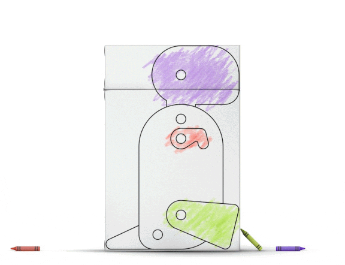
This white cardboard bin should help kids actively participate in
waste sorting.
Educators may use this moment as a
learning opportunity for sustainability, so that
students have a holistic view of the impact of their actions on the
environment.
All used EVA collected from schools would be sorted into 2 categories
– each of them has a different destination:
Small scraps → Recycling partners
Large scraps → Reuse (Dinosaurs!)
The animation below depicts way how we could reuse sheets that were
only partially compromised:
Now imagine we repeated the process above with a few other EVA sheets.
Doing so, we would obtain enough material to craft 2 dinosaur toys.
The following animation shows the process of turning foam into
dinosaur legs, arms, tails and more:
The die cut process would leave remains like the ones below. They
would be forwarded to a recycling partner – one of the rare facilities
that deal with this kind of foam.
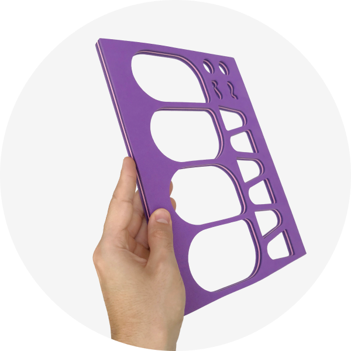
By using a process similar to the one described above, the following
parts were crafted:
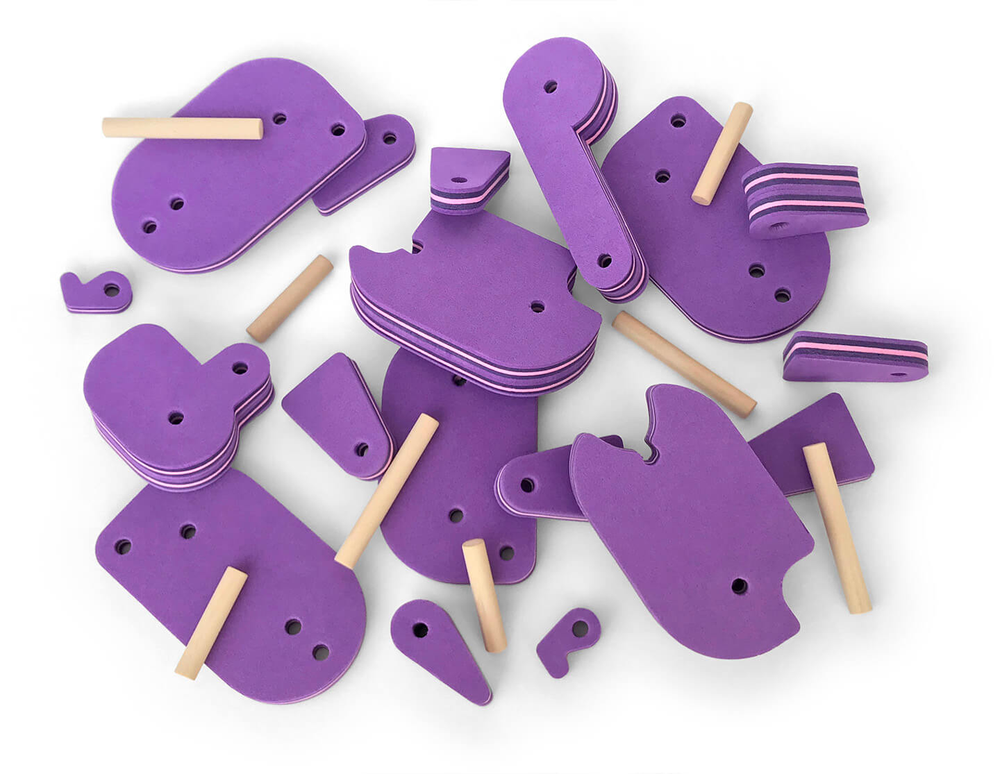
Beyond the foam pieces, all wooden sticks are made from the
reforested Brazilian “pau-marfim” tree.
These components would be then packed and made available both for the
school partners and for the broad public, through online purchase.
After being acquired, each one of them would be built according to
easy-to-follow instructions.
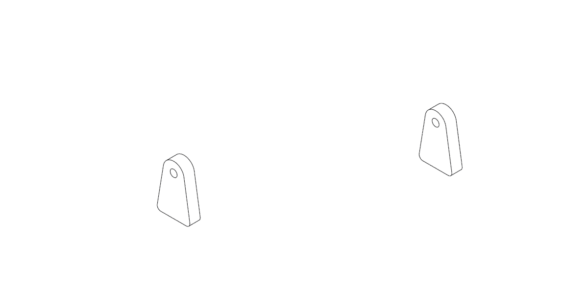
And they would look like this:
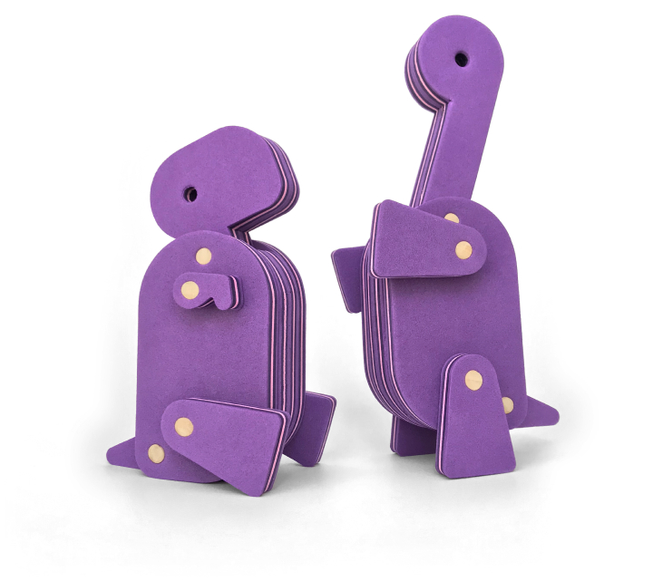
Those dinosaurs can be played with over and over again. But, after
some time, it’s common for toy parts to get lost.
For example, imagine a T-Rex leg has gone missing.
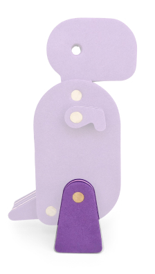
Rather than throwing your legless dinosaur away – or even buying a
whole new one –, you could try to find a replacement for it at the
online shop.
The screens below represent what this experience would look like on a
mobile device, from search to results:
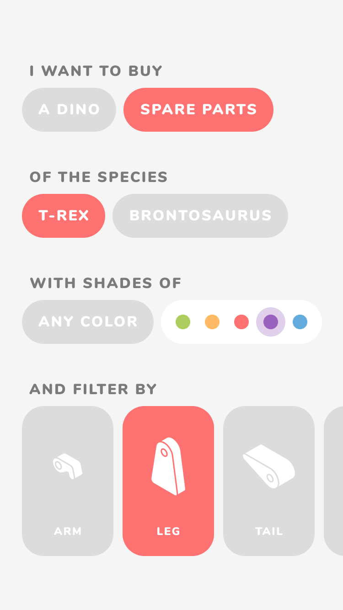
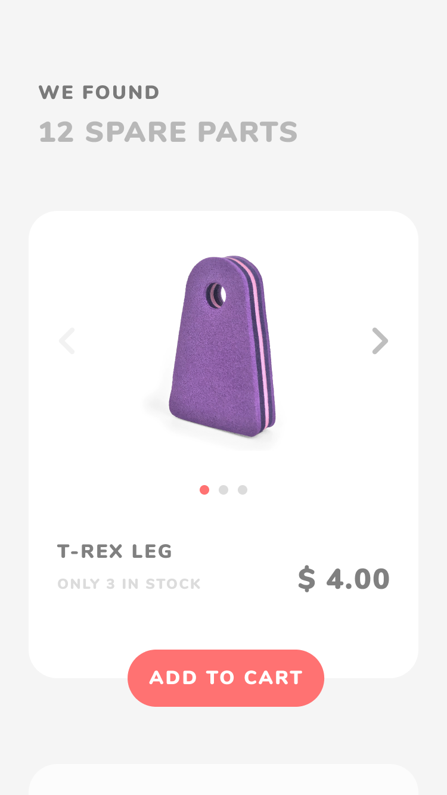
Beyond replacing parts, there could also be a policy for returning
broken pieces, so they could be properly repurposed.
Beyond replacing parts, there could also be a policy for returning
broken pieces, so they could be properly repurposed.
Up until now we have talked about the environmental aspect of these
toys and their life cycle. Now we will talk about how the toy itself
was actually designed.
Toy Design
You probably know a child that is fascinated by dinosaurs (or maybe
that was you).
It is
reported
that about 1 in 3 kids will develop an “intense interest” during the
preschool period. The themes of interest are usually planes, trains or
cars – but dinosaurs are close on the list.
Studies
also show this kind of “conceptual” interest has been linked to
improved cognitive development – and toys play an important role in
this process:
Play is an approach to learning, an engaged, fun, curious way of
discovering your world.
Excerpt from
The New York Times
interview with Dr Catherine Tamis-LeMonda, professor of applied
psychology at New York University
So I started sketching.
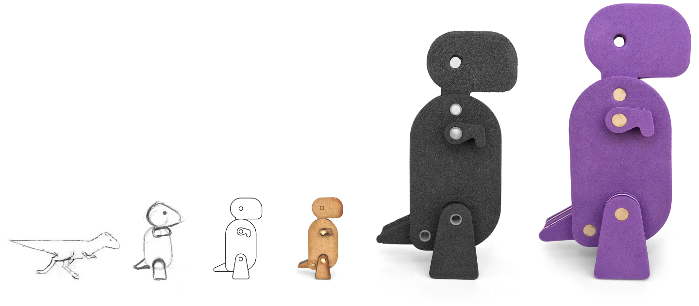
From a more realistic drawing on the left ← to the minimalist toy on
the right →, there were a few steps.
The second sketch aimed to reduce the dinosaur into its most basic
shapes. This drawing was then refined on the computer – using only
circles, rectangles and triangles.
The first physical prototypes were tiny wooden dinosaurs. They were
made of laser cut MDF and used a toothpick for each
axis. This is what they looked like:
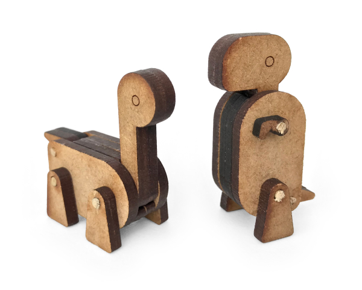
Actually, the T-Rex in the photo above was the second one ever built.
The first one used to lay around my desk.
That was until the son a of co‑worker saw it there. He was
obviously bored from being at the office and came to me asking about
the dino.
Long story short, it’s his now.
This kind of spontaneous feedback gave me confidence to refine the
project and develop it further.
The next prototype was bigger and used laser cut EVA foam. Since this
process leaves burn marks, it’s not suitable for final product
manufacturing.
After a few ajustments, the final toy was crafted.
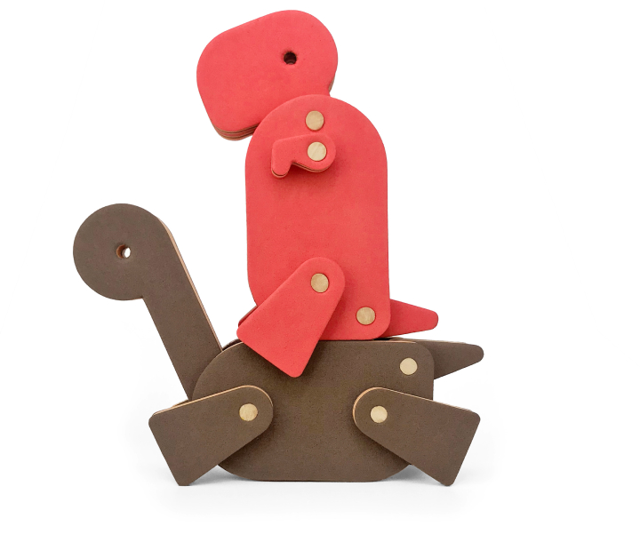
My quest for simplicity was inspired by ideas like this:
Sometimes the simplest toys may be the best, in that they provide
opportunities for children to use their imagination.
But, beyond a simple, modular and geometric toy that nurtures
creativity, I wanted to create a friendly toy – with enough
personality to sparkle affection.
The point was to balance those aspects and create something both
minimal and lovely.
Name
The name of these toys come from a pun in Brazilian Portuguese. The
original word “montadinho” means something like “assembled”.
But, with a small tweak, we can make it say
“montadino”, which is now something like
“build-o-saur”.